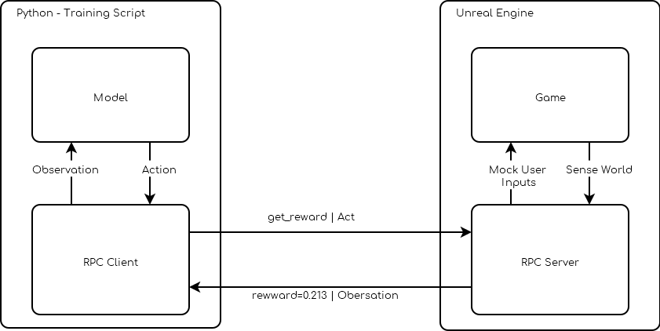
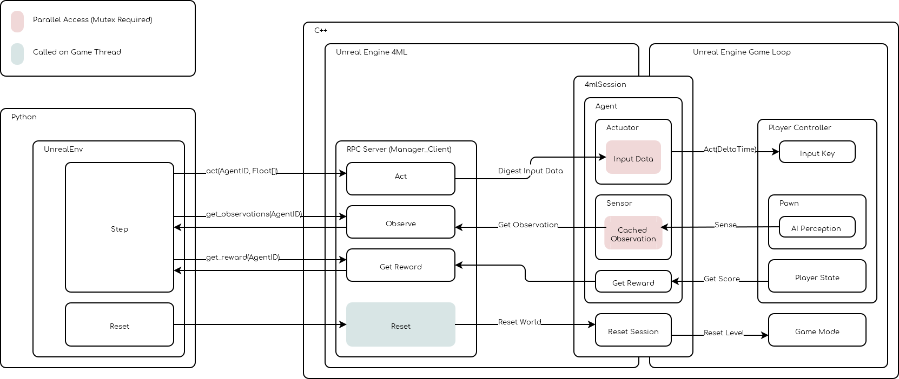

MLAdapter
MLAdapter was made to be as unintrusive as possible, this means that you will need to modify very little of your game (if anything) to turn it into a reinforcement learning environment.
The main requirements that would need to be addressed are:
Reward: a value that quantify how well your agent/neural network is doing (i.e a score)ResetLevel: the ability to restart a level when the agent dies
Because of it unintrusive design, ML-researchers will spend their time on the python side focusing on the machine learning side while developers can focus on the environment itself. While the cartpole environment is using a bit of C++ most of it was written to expose functionallity to blueprint, as such very little C++ knownledge is necessary to build a custom environment.
In a nutshell
MLAdapter is essentially a RPC server that is started along side your game and is able to receive actions/inputs from a remote client and reply with information about the game.
This can be used to train neural networks to play games.
{kind=link}
MLAdapter Architecture
A more detailed overview of MLAdapter
{kind=link}